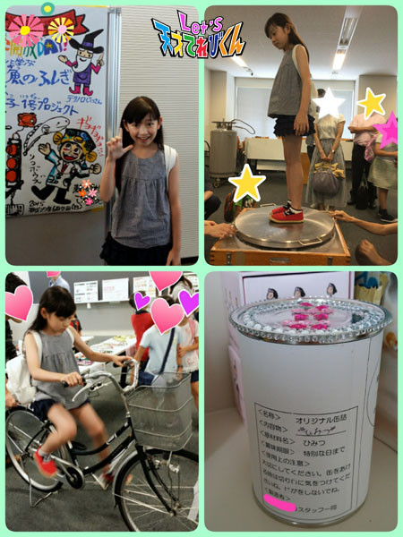

21世紀調査活動情報！！［大野拓朗課長］
茶の間戦士諸君、久しぶりだな！ 大野課長だ！！
みんな聞いてくれ！！
今回、なんともうれしいことがあったから、みんなに自慢したくて・・・・・・
いやいや、お知らせしたくて、
このブログを書かせてもらうことにした。
実は、７月５日（日）、ほっともっとフィールド神戸にて、
オリックスｖｓソフトバンクの始球式を務めさせていただくことになったのだ！！！
ねえ、これすごすぎない？ すごいでしょ？
21世紀を知るために、俳優という仮の姿で活動してきた成果だ！
さすが私！！
ゴホン！
そこで、関西に住んでいる茶の間戦士諸君にお願いがあるんだ。
私の勇姿をぜひ球場まで応援しに来てほしい。
君たちのために、ズバッとカレーにひき肉を入れて
私の大好物であるキーマカレーを作っ・・・・・・じゃなかった。
ズバッと華麗（かれい）にストライクを入れるところを見てほしい！！
さあどんなオシャレをして行こうかな・・・・・・
あ、そうだ！ 野村靖さんに借りた着物を大切に持ってるから、
あれは子どもたちにも人気あったし、着物で出ちゃおうかな。
そしたら目立つぞー！！
うーん、でもいつもの私の一張羅（いっちょうら）も気に入ってるから
捨てがたいなあ・・・・・・・・・・・・
どうしよーーーー！！！
当日までワクワクしながら考えよっと。
それでは、君たちの声援を待っている！
レッツ、ほっともっとフィールド神戸！！！
投稿者:大野拓朗課長 | 投稿時間:18時55分 | カテゴリ：未来人 | 固定リンク
自分にとって『特別な言葉』 ［桐畑カレン］
こんにちは。
カレンです(*^^*)
山口どちゃもん ふくぺらぶうが登場したときに、
ふぐについて教えに来てくださった「さかなクン」。
そのときから大好きになってしまった私は、
この前ある大学に「さかなクン」のお話を聞きに行ってきました (^^)
お話のあとは、世界で１つだけのかんづめを作ったり、
自転車に乗って発電させて電車を走らせたり
（そういえば、栃木どちゃもん とちぼるたのときも自転車に乗って発電させたなあ）、
「超電導（ちょうでんどう）」とよばれる技術を使って、体がうくという体験をしてみたり、
とても楽しかったです (*^^*)

私にとって「 特別な言葉 」はですね～。
やっぱりこれです！
☆ありがとう☆
いつも感しゃの気持ちを忘れないようにしています。
そして、口に出すようにもしています。
言葉って、口に出したことが、本当にそうなっていく不思議な力があるみたいです。
ありがとうって人から言われると私はとってもうれしい (^^)
だから私もいつも言うようにしています！
☆だいじょ～ぶ！☆
なにか不安なことや、ちょっと失敗しちゃったなあ、と思うことがあっても、
「 だいじょう～ぶ！ 」と言ってもらえたり、心でとなえると、
なんかだいじょうぶになった気がする魔法の言葉です。
そして私の座右の銘は・・・
☆しんけんてきとう☆
この言葉は、宮崎どちゃもん てげてげのときに
ペアになった瑛ちゃんが言った言葉なのですが、
これを聞いたとき
「 おお～！なんて私にぴったりな言葉なんだ！ 」って感動したんです (^o^)
もちろん、いつも真剣です！
でも、うまくいかないときもあります。
そんなときは、ちょっとひと休み。
そうしたら、またチャレンジしたときに、うまくいくことも！
真剣ばかりだとつかれちゃいます (>.<)
たまには、適当に過ごすのも大切だと思ってます (*^^*)
投稿者:桐畑カレン | 投稿時間:18時45分 | カテゴリ：てれび戦士 | 固定リンク